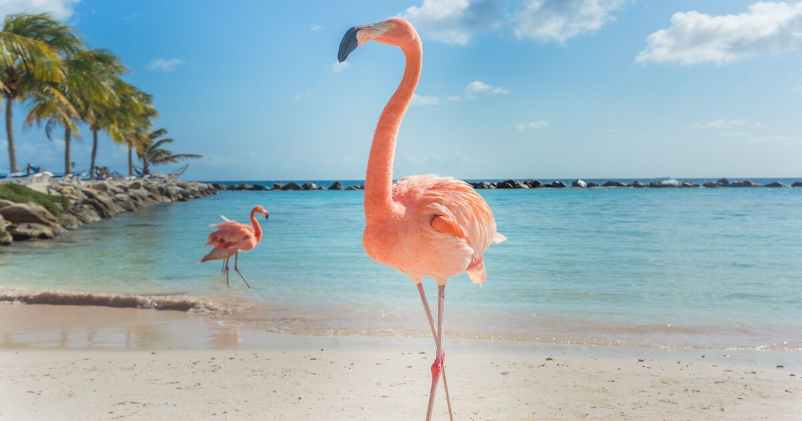
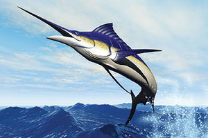
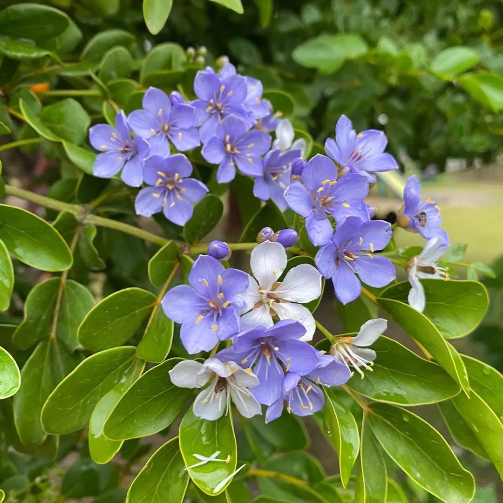

The Commonwealth of The Bahamas
Our nation, symbols, and heritage
About The Bahamas
The Commonwealth of The Bahamas is an archipelago of approximately 700 islands and cays, of which around 30 are inhabited. With a population of roughly 400,000, the nation’s capital is Nassau, located on the island of New Providence. The Bahamas gained independence from Great Britain on 10 July 1973 and operates as a constitutional parliamentary democracy.
The Bahamas is a proud member of the Caribbean Community (CARICOM), the Commonwealth of Nations, and the United Nations. The nation’s economy is driven primarily by tourism, which accounts for approximately 70% of GDP, alongside a well-established financial services sector that contributes significantly to the country’s economic stability.
The islands are celebrated for their extraordinary natural beauty — crystal-clear turquoise waters, pristine coral reefs, and remarkable marine biodiversity that attracts visitors and researchers from around the world. The Bahamas is home to some of the most biodiverse marine ecosystems in the Caribbean, including the Andros Barrier Reef, the third-largest barrier reef system on Earth.

Quick Facts
- Capital
- Nassau
- Population
- ~400,000
- Official Language
- English
- Currency
- Bahamian Dollar (BSD)
- Government
- Constitutional Monarchy / Parliamentary Democracy
- Head of State
- His Majesty King Charles III
- Governor-General
- H.E. Dame Cynthia “Mother” Pratt
- Prime Minister
- The Hon. Philip “Brave” Davis, KC, MP
- Independence
- 10 July 1973
- CARICOM Member
- Since 1983
Symbols of The Bahamas

Flamingo
National Bird
The Caribbean flamingo, found in abundance on Great Inagua island, with a population exceeding 50,000.

Blue Marlin
National Fish
The Atlantic blue marlin, a prized game fish found in Bahamian waters, appears on the Coat of Arms.
Yellow Elder
National Flower
The Yellow Elder blooms throughout the year across the islands, its golden petals symbolising the warmth of The Bahamas.

Lignum Vitae
National Tree
Known as the ‘Tree of Life,’ the Lignum Vitae is one of the hardest woods in the world and is native to the Caribbean.

Coat of Arms
National Emblem
Adopted in 1971, featuring the Santa Maria ship, supported by the Blue Marlin and the Flamingo.
Forward, Upward, Onward Together
The Coat of Arms of The Commonwealth of The Bahamas was adopted on 7 December 1971, designed by Dr. Hervis L. Bain, Jr.
The shield depicts Christopher Columbus’s ship, the Santa Maria, sailing beneath the sun on a field of blue. It is crested by a conch shell — a symbol of the nation’s marine heritage — set before a spray of palm fronds atop a Royal Helmet.
The shield is supported by a Blue Marlin, standing upon the sea, and a Flamingo, standing upon the land — representing the rich natural heritage of the islands. Below, the national motto reads: Forward, Upward, Onward Together.
National Anthem
March On Bahamaland
Written by Timothy Gibson, ‘March On Bahamaland’ has served as the national anthem since independence in 1973.
Lift up your head to the rising sun, Bahamaland;
March on to glory, your bright banners waving high.
See how the world marks the manner of your bearing!
Pledge to excel through love and unity.
Pressing onward, march together to a common loftier goal;
Steady sunward, tho’ the weather hide the wide and treacherous shoal.
Lift up your head to the rising sun, Bahamaland;
’Til the road you’ve trod lead unto your God,
March on, Bahamaland!